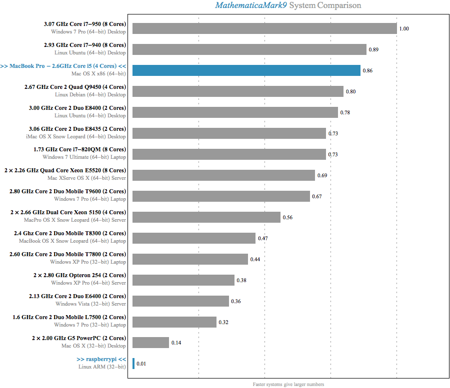
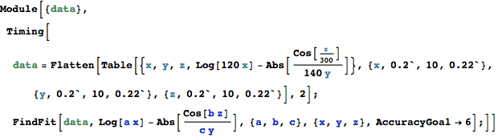
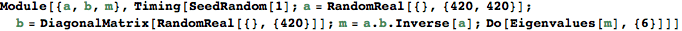
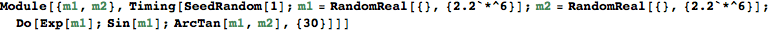
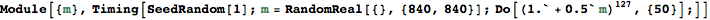
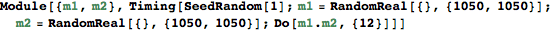
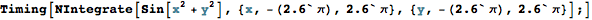
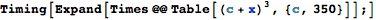
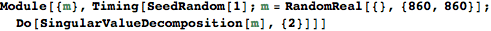
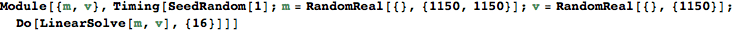

MathematicaMark9 Benchmark Report
| Machine Name: | MacBook Pro - 2.6GHz Core i5 (4 Cores) |
| System: | Mac OS X x86 (64-bit) |
| Date: | December 31, 2013 |
| Mathematica Version: | 9.0.1 |
| Benchmark Result: | 0.86 |
| Machine Name: | raspberrypi |
| System: | Linux ARM (32-bit) |
| Date: | December 31, 2013 |
| Mathematica Version: | 10.0.0 |
| Benchmark Result: | 0.01 |
MathematicaMark9 Results

|
||||||||||||||||||||||||||||||||||||||||||||||||||||||||||||||||||||||||||||||||||||||||||||||||||||||||||||||||||||||||||||||||||||||||||||||||||||||||||||||||||||||||||||||||||||||||||||||||||||||||||||||||||||||||||||||||||||||||||||||||||||||||||||||||||||||||||||||||||||||||||||||||||||||||||||||||||||||||||||||||||||||||||||||||||||||||||||||||||||||||||||||||||||||||||||||||||||||||||||||||||||||||||||||||||||||||||||||||||||||||||||||||||||||||||||||||||||||||||||||||||||||||||||||||||||||||||||||||||||||||||||||||||||||||||||||||||||||||||||||||||||||||||||||||||||||||||||||||||||||||||||||||||||
|
||||||||||||||||||||||||||||||||||||||||||||||||||||||||||||||||||||||||||||||||||||||||||||||||||||||||||||||||||||||||||||||||||||||||||||||||||||||||||||||||||||||||||||||||||||||||||||||||||||||||||||||||||||||||||||||||||||||||||||||||||||||||||||||||||||||||||||||||||||||||||||||||||||||||||||||||||||||||||||||||||||||||||||||||||||||||||||||||||||||||||||||||||||||||||||||||||||||||||||||||||||||||||||||||||||||||||||||||||||||||||||||||||||||||||||||||||||||||||||||||||||||||||||||||||||||||||||||||||||||||||||||||||||||||||||||||||||||||||||||||||||||||||||||||||||||||||||||||||||||||||||||||||||
|
MathematicaMark9 Sources
Test 1: Data Fitting

Test 2: Digits of Pi
Test 3: Discrete Fourier Transform
Test 4: Eigenvalues of a Matrix

Test 5: Elementary Functions

Test 6: Gamma Function
Test 7: Large Integer Multiplication

Test 8: Matrix Arithmetic

Test 9: Matrix Multiplication

Test 10: Matrix Transpose
Test 11: Numerical Integration

Test 12: Polynomial Expansion

Test 13: Random Number Sort
Test 14: Singular Value Decomposition

Test 15: Solving a Linear System

[Plain Text Version]
=== System Information ===
Machine Name: MacBook Pro - 2.6GHz Core i5 (4 Cores)
System: Mac OS X x86 (64-bit)
Date: December 31, 2013
Mathematica Version: 9.0.1
Benchmark Result: 0.86
Machine Name: raspberrypi
System: Linux ARM (32-bit)
Date: December 31, 2013
Mathematica Version: 10.0.0
Benchmark Result: 0.01
=== MathematicaMark9 System Comparison ===
3.07 GHz Core i7-950 (8 Cores) 1.00
Windows 7 Pro (64-bit) Desktop
2.93 GHz Core i7-940 (8 Cores) 0.89
Linux Ubuntu (64-bit) Desktop
MacBook Pro - 2.6GHz Core i5 (4 Cores) 0.86
Mac OS X x86 (64-bit)
2.67 GHz Core 2 Quad Q9450 (4 Cores) 0.80
Linux Debian (64-bit) Desktop
3.00 GHz Core 2 Duo E8400 (2 Cores) 0.78
Linux Ubuntu (64-bit) Desktop
3.06 GHz Core 2 Duo E8435 (2 Cores) 0.73
iMac OS X Snow Leopard (64-bit) Desktop
1.73 GHz Core i7-820QM (8 Cores) 0.73
Windows 7 Ultimate (64-bit) Laptop
2 × 2.26 GHz Quad Core Xeon E5520 (8 Cores) 0.69
Mac XServe OS X (64-bit) Server
2.80 GHz Core 2 Duo Mobile T9600 (2 Cores) 0.67
Windows 7 Pro (64-bit) Laptop
2 × 2.66 GHz Dual Core Xeon 5150 (4 Cores) 0.56
MacPro OS X Snow Leopard (64-bit) Server
2.4 Ghz Core 2 Duo Mobile T8300 (2 Cores) 0.47
MacBook OS X Snow Leopard (64-bit) Laptop
2.60 GHz Core 2 Duo Mobile T7800 (2 Cores) 0.44
Windows XP Pro (32-bit) Laptop
2 × 2.80 GHz Opteron 254 (2 Cores) 0.38
Windows XP Pro (64-bit) Server
2.13 GHz Core 2 Duo E6400 (2 Cores) 0.36
Windows Vista (32-bit) Server
1.6 GHz Core 2 Duo Mobile L7500 (2 Cores) 0.32
Windows 7 Pro (32-bit) Laptop
2 × 2.00 GHz G5 PowerPC (2 Cores) 0.14
Mac OS X (32-bit) Desktop
raspberrypi 0.01
Linux ARM (32-bit)
(Faster systems give larger numbers)
=== MathematicaMark9 Detailed Timings ===
Total Test 1 Test 2 Test 3 Test 4 Test 5 Test 6 Test 7 Test 8 Test 9 Test 10 Test 11 Test 12 Test 13 Test 14 Test 15
3.07 GHz Core i7-950 (8 Cores)
Windows 7 Pro (64-bit) Desktop 13.8 0.80 0.98 1.00 0.80 0.84 1.00 0.98 1.00 0.78 1.06 0.95 0.89 0.97 0.92 0.86
2.93 GHz Core i7-940 (8 Cores)
Linux Ubuntu (64-bit) Desktop 15.6 0.94 0.99 1.14 0.92 0.80 0.81 0.88 1.51 0.89 1.31 1.16 1.14 1.41 0.89 0.86
MacBook Pro - 2.6GHz Core i5 (4 Cores)
Mac OS X x86 (64-bit) 16.1 0.66 0.78 0.95 0.79 1.31 0.63 0.58 1.25 2.15 0.95 0.97 0.13 1.75 1.53 1.65
2.67 GHz Core 2 Quad Q9450 (4 Cores)
Linux Debian (64-bit) Desktop 17.3 1.11 0.96 1.60 1.14 1.17 0.83 0.89 1.77 0.92 1.25 1.21 0.98 1.44 1.04 1.06
3.00 GHz Core 2 Duo E8400 (2 Cores)
Linux Ubuntu (64-bit) Desktop 17.8 1.05 0.87 1.88 1.18 1.45 0.76 0.79 1.73 1.43 1.13 1.03 0.84 1.21 1.15 1.33
3.06 GHz Core 2 Duo E8435 (2 Cores)
iMac OS X Snow Leopard (64-bit) Desktop 18.9 1.06 1.07 1.65 0.93 1.94 0.85 0.88 1.65 1.42 1.32 1.11 1.01 1.47 1.16 1.39
1.73 GHz Core i7-820QM (8 Cores)
Windows 7 Ultimate (64-bit) Laptop 18.9 1.26 1.19 1.14 1.26 1.33 1.16 1.12 1.17 1.59 1.25 1.63 1.08 1.09 1.44 1.23
2 × 2.26 GHz Quad Core Xeon E5520 (8 Cores)
Mac XServe OS X (64-bit) Server 20.1 1.06 1.22 1.44 1.00 1.67 1.05 1.12 1.71 0.67 2.79 1.32 1.22 1.76 0.94 1.08
2.80 GHz Core 2 Duo Mobile T9600 (2 Cores)
Windows 7 Pro (64-bit) Laptop 20.7 1.12 1.20 1.90 1.06 2.04 1.17 1.15 1.61 1.53 1.61 1.19 1.06 1.22 1.25 1.56
2 × 2.66 GHz Dual Core Xeon 5150 (4 Cores)
MacPro OS X Snow Leopard (64-bit) Server 24.8 1.56 1.26 2.20 1.34 2.44 1.02 1.12 2.03 1.20 2.97 1.55 1.19 1.77 1.46 1.64
2.4 Ghz Core 2 Duo Mobile T8300 (2 Cores)
MacBook OS X Snow Leopard (64-bit) Laptop 29.8 1.78 1.40 2.44 1.40 3.03 1.13 1.22 2.20 2.35 2.31 1.63 1.57 2.06 2.86 2.38
2.60 GHz Core 2 Duo Mobile T7800 (2 Cores)
Windows XP Pro (32-bit) Laptop 31.8 1.27 1.80 2.59 1.44 3.69 1.92 2.06 2.41 3.25 1.91 1.45 1.41 1.34 2.52 2.72
2 × 2.80 GHz Opteron 254 (2 Cores)
Windows XP Pro (64-bit) Server 36.1 2.30 1.09 2.70 2.38 4.83 0.78 0.91 2.06 4.14 2.31 1.70 1.94 1.58 4.03 3.31
2.13 GHz Core 2 Duo E6400 (2 Cores)
Windows Vista (32-bit) Server 38.1 2.49 2.18 3.39 1.75 3.18 2.35 2.54 2.92 3.28 2.52 2.33 1.65 1.78 3.12 2.60
1.6 GHz Core 2 Duo Mobile L7500 (2 Cores)
Windows 7 Pro (32-bit) Laptop 43.8 2.17 2.75 3.74 2.26 4.23 2.90 3.14 3.46 3.42 2.73 2.48 1.92 2.11 3.39 3.12
2 × 2.00 GHz G5 PowerPC (2 Cores)
Mac OS X (32-bit) Desktop 100.9 4.61 4.64 10.90 4.94 19.50 5.16 5.01 5.70 5.21 7.17 3.33 4.87 4.28 9.74 5.84
raspberrypi
Linux ARM (32-bit) 2913.0 29.90 12.30 79.30 137.00 175.00 15.80 19.20 27.80 1140.00 36.80 35.40 4.55 25.10 433.00 746.00
(Timings are CPU time in seconds)
This MathematicaMark9 report was created with Wolfram Mathematica 9.0. MathematicaMark is a trademark of Wolfram Research, Inc.